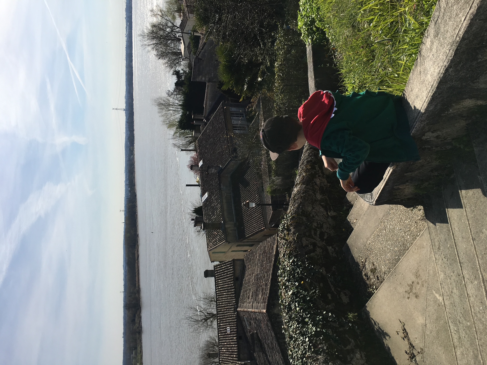
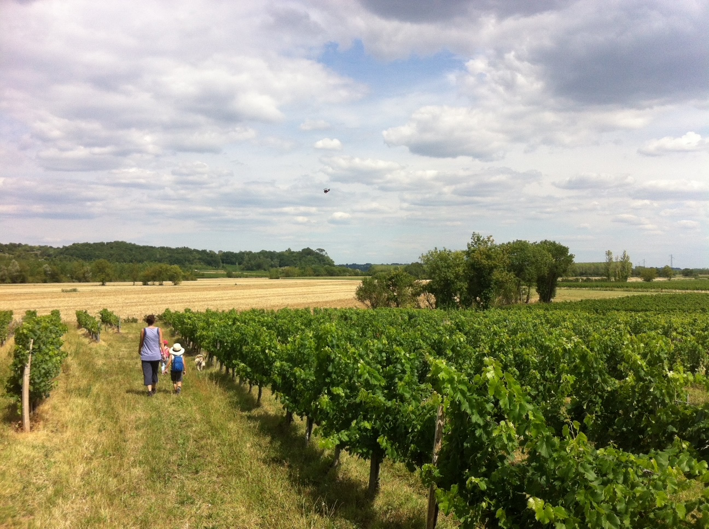
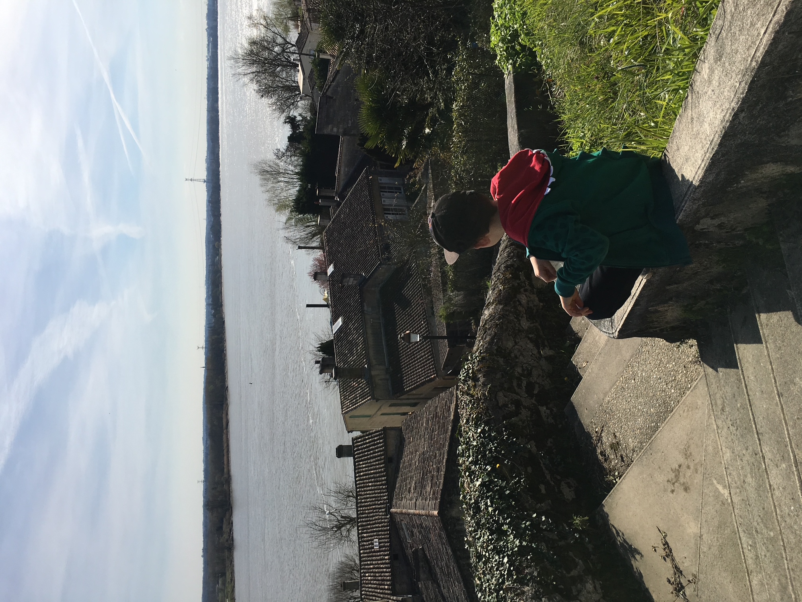
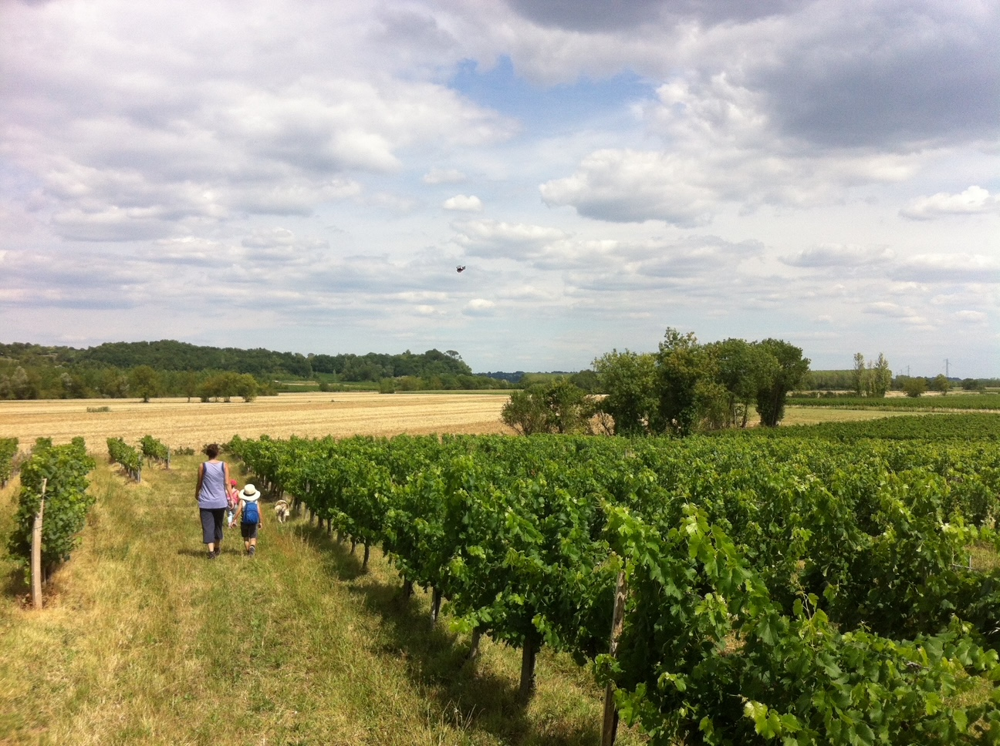

Je ne sais pas tout, mais j’apprends vite
Depuis toujours, j’ai cette façon de voir le monde comme un système de logiques, de récits et de signaux à décrypter. Je suis attiré par les mécaniques cachées, celles qu’on devine en regardant plus attentivement. C’est ce qui me guide dans mes choix : des jeux de gestion à la musique progressive, des histoires qu’on construit aux analyses qu’on mène. Toujours avec passion. Toujours avec méthode.
Avant les outils, avant les lignes de code ou les tableaux de données, il y a ce qui me définit profondément : la curiosité, le goût du raisonnement, le besoin presque instinctif de mettre de l’ordre dans ce qui semble chaotique. Je suis de ceux qui aiment comprendre, pas seulement savoir. De ceux qui creusent, connectent, explorent.
Il y a quelques années, j’ai fait le choix de m’installer dans la région bordelaise. Je ne venais pas chercher une opportunité professionnelle, mais un cadre de vie. Et j’ai trouvé bien plus : un ancrage, un équilibre, une dynamique. C’est ici que j’ai décidé de construire, de poser mes repères, d’ouvrir un nouveau chapitre.
Ce chapitre, je l’ai d’abord écrit dans le monde du retail. Un univers exigeant, réactif, où il faut savoir gérer, décider, optimiser. Pendant plus de 15 ans, j’y ai appris à travailler avec le réel, avec les équipes, avec les chiffres du quotidien. J’y ai développé ma rigueur, ma capacité d’analyse, et surtout cette habitude de toujours vouloir comprendre pour mieux agir.
Naturellement, le métier de Data Analyst s’est imposé à moi comme une continuation logique. Aujourd’hui, je collecte, je nettoie, je modélise, je visualise. Mais au-delà des outils, ce que je fais surtout, c’est raconter les données. Je leur donne une forme, une voix, une utilité.
Ce que je cherche dans mon travail, c’est cette zone d’équilibre entre la précision technique et la valeur métier, entre la donnée brute et l’usage qu’on en fait. J’aime être ce passeur entre les chiffres et les décisions, entre la complexité et la clarté.
Et demain ? Je continuerai à explorer, à m’adapter, à apprendre. Parce qu’un analyste, c’est aussi quelqu’un qui avance avec son temps, qui s’ouvre aux outils, à l’IA, aux nouveaux usages. Je ne sais pas encore exactement où cela me mènera. Mais je sais que je continuerai à faire ce que je fais aujourd’hui : mettre la donnée au service de l'humain.